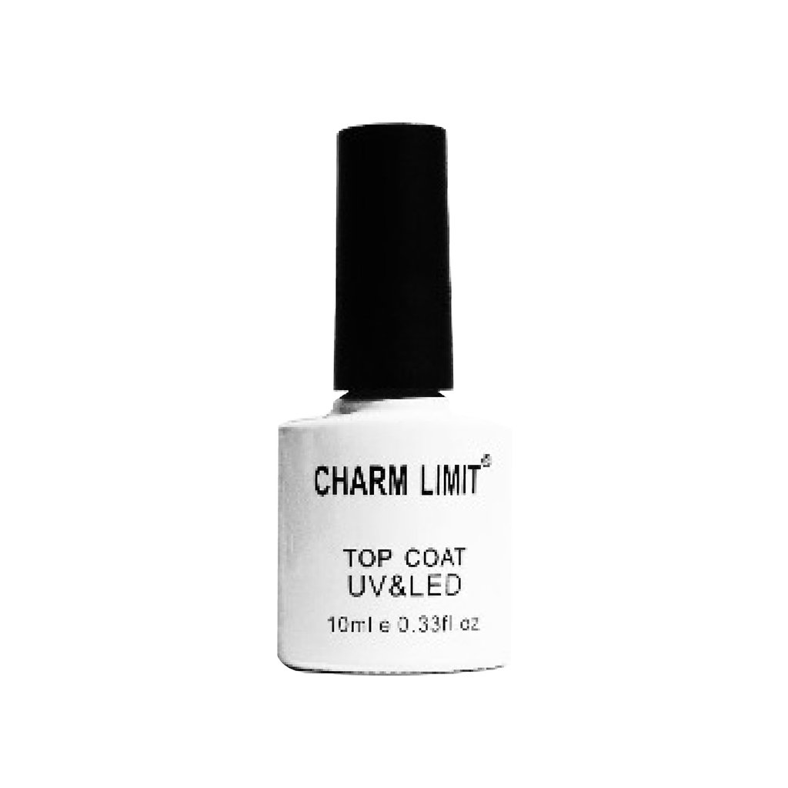
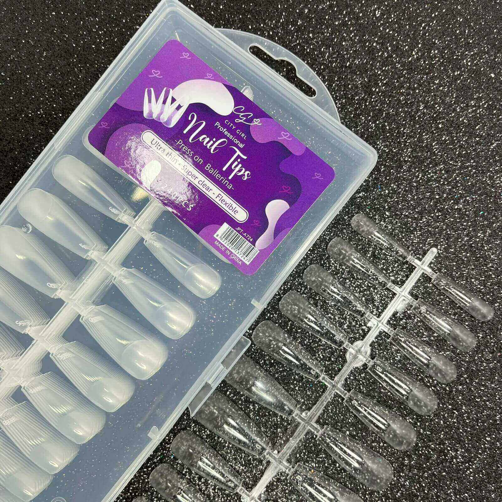
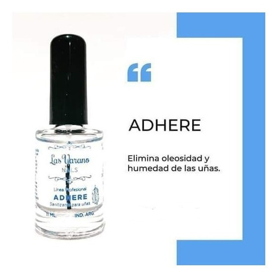
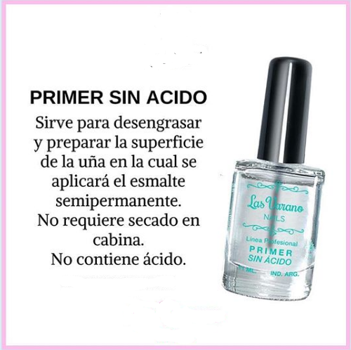
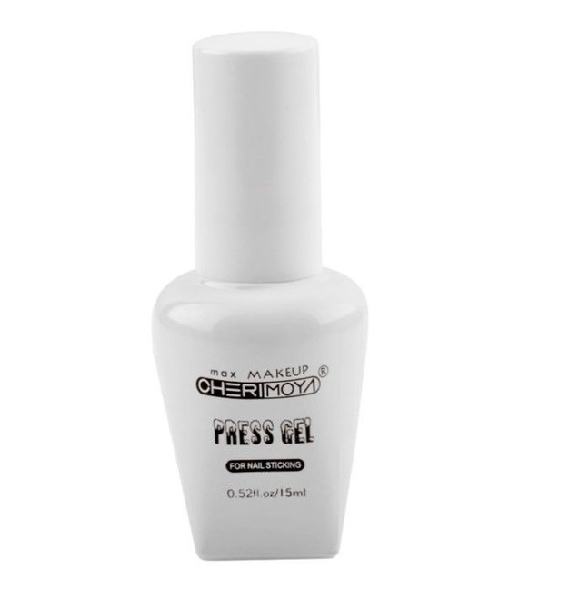
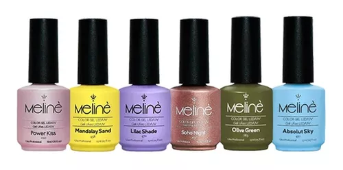
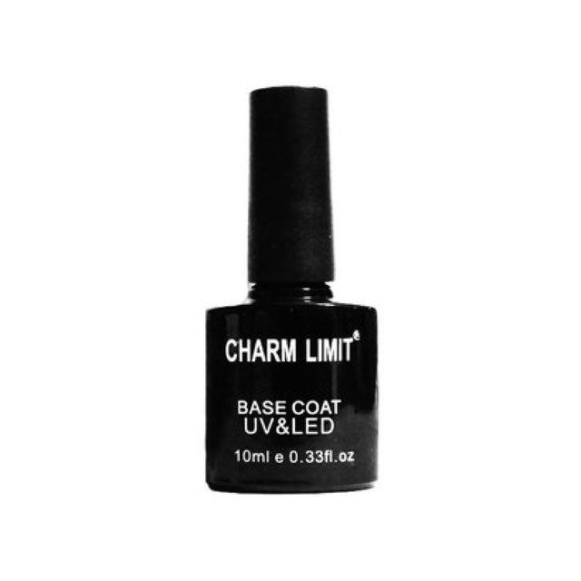
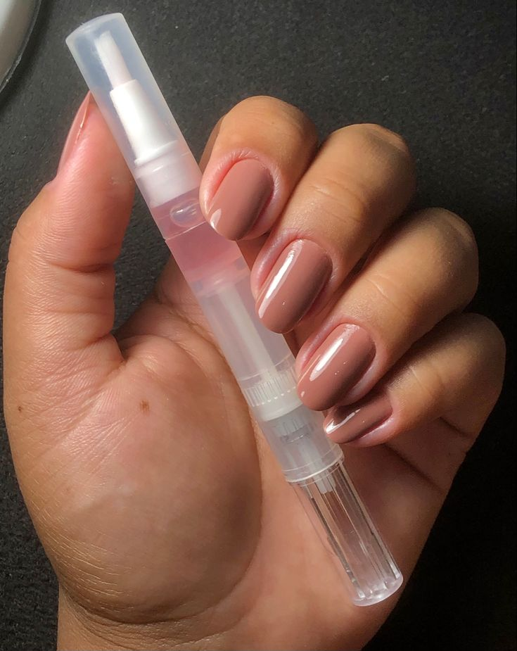

El top coat es una capa superior transparente que se aplica sobre el esmalte de uñas. Sirve para proteger la manicura, prolongar la duración del esmalte y proporcionar un acabado perfecto. Actúa como una capa protectora frente a las agresiones externas y evita que el esmalte se descascare.
Los Gel Tips, o también llamados Soft Gel Nail Tips, son tips con forma de uña que se pegan directamente a la placa de la uña natural. Están hechos de gel elástico y flexible, por lo que son muy duraderos en el uso.
Se utiliza para quitar la oleosidad de la uña, se coloca antes de un bonder, se usa para lograr mayor adhesión, puede llamarse según las marcas también como deshidratador, nivelador de ph.
El primer para uñas es un producto de manicura que se aplica a las uñas naturales sin pulir antes de aplicar el esmalte de color o las mejoras artificiales con acrílico o gel. Funciona tanto como agente de limpieza como adhesivo.
Es un gel que sirve como pegamento(mas conocido como press gel)de uñas soft, este gel se cura 60s en cabina para que seque y quede firme.
Los esmaltes semipermanentes o esmaltes en gel, a diferencia de los tradicionales, para secarse (curar) necesitan de la luz UV/LED. En su formulación poseen fotoiniciadores que, al recibir una luz UV o LED, se solidifican por la polimerización de sus moléculas.
El uso de una capa base debajo del esmalte tradicional es un paso esencial para conseguir una manicura duradera. Al crear una superficie uniforme para que se adhiera el esmalte, se evita que el esmalte se desconche y se deprenda antes de tiempo y se garantiza un buen acabado que nuestras manicuras queden perfectas.
El corta y empuja cutículas es una herramienta esencial en manicura que sirve para mantener las cutículas y la piel alrededor de las uñas en buen estado.

El aceite de cutículas es un producto diseñado específicamente para hidratar y nutrir las cutículas y la piel circundante.
